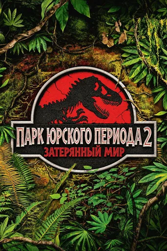

Парк юрского периода 2: Затерянный мир 1997
События этого фильма разворачиваются через четыре года после того, что произошло в «Парке Юрского периода». На близлежащем острове динозавры выжили и адаптировались к дикой природе. Но вот находится Некто, кто хочет перевезти их на материк и заработать на этом, не понимая, какими могут быть последствия, и посылает на остров своих людей. Джон Хэммонд, который потерял контроль над своей компанией, считает, что у него появился шанс исправить свои прошлые ошибки. Он, в свою очередь, снаряжает экспедицию во главе с Яном Малкольмом, чтобы появиться там до высадки наемников. В результате происходящих событий две эти конфликтующие группы вынуждены объединиться перед лицом смертельной опасности. И, как потом выясняется, времени им отпущено совсем немного.
Открыть в каталогеДанные и постеры принадлежат их правообладателям. Этот продукт использует TMDB API, но не одобрен и не сертифицирован TMDB.